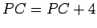
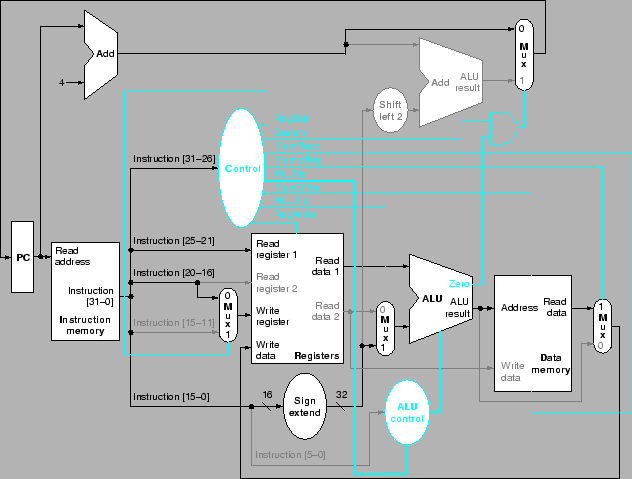
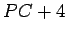

Next: รวบยอดชุดควบคุมคอมพิวเตอร์
Up: การออกแบบสร้างโปรเซสเซอร์พื้นฐาน
Previous: การสร้างชุดควบคุมหลัก
Contents
Index
จากข้อมูลของรูป 5.19 ถึง 5.20 เราสามารถออกแบบลอจิกของชุดควบคุมได้ ต่อไปเราจะแสดงการทำงานของคำสั่งต่างๆ โดยอธิบายการทำงานของสัญญาณควบคุมต่างๆ
รูป 5.21 แสดงการทำงานของเส้นทางข้อมูลสำหรับคำสั่ง add $t1, $t2, $t3 โดยทำในเพียงหนึ่งวงรอบของสัญญาณนาฬิกา การทำงานประกอบด้วยขั้นตอนดังต่อไปนี้
- เรียกคำสั่งตามตำแหน่งที่กำหนดใน PC และทำการเพิ่มค่า 
- อ่านค่ารีจีสเตอร์ $t1 และ $t2 จาก Register File ส่วนควบคุมหลักทำการประมวลสัญญาณควบคุมที่เหมาะสมในการทำงานของโปรเซสเซอร์
- ALU อ่านค่าจากรีจีสเตอร์ จาก Register File และ รับค่าการควบคุม 6 บิตจาก funct ฟิลด์ เพื่อระบุการทำงานของ ALU
- เขียนผลที่ได้จาก ALU ลงใน Register File โดยใช้บิต 15:11 ของคำสั่งเป็นตัวระบุรีจีสเตอร์
Figure 5.21:
การทำงานของเส้นทางข้อมูลสำหรับคำสั่ง add $t1, $t2, $t3
|
|
เช่นเดียวกันสำหรับคำสั่ง load word ตัวอย่างเช่น lw $t1, offset($t2) แสดงการทำงานของสัญญาณควบคุมในรูป 5.22 มีขั้นตอนการประมวลผล 5 ขั้นตอน ดังต่อไปนี้
- อ่านคำสั่งตามตำแหน่งที่กำหนดใน PC และทำการเพิ่มค่า
- อ่านค่ารีจีสเตอร์ $t2 จาก Register File ส่วนควบคุมหลักทำการประมวลสัญญาณควบคุมที่เหมาะสมในการทำงานของโปรเซสเซอร์
- ALU อ่านค่าจากรีจีสเตอร์ จาก Register File และ บวกค่าที่ได้กับส่วนหลังของคำสั่งที่มีขนาด 16 บิต หลังจากการทำ Sign Extend และ Shift Left สองบิต
- ป้อนผลบวกที่ได้เข้าแอดเดรสของหน่วยความจำข้อมูล
- เขียนผลที่ได้จาก Data Memory ลงใน Register File โดยใช้บิต 20:16 ของคำสั่งเป็นตัวระบุรีจีสเตอร์
Figure 5.22:
การทำงานของเส้นทางข้อมูลสำหรับคำสั่ง lw $t1, offset($t2)
|

|
ต่อมาพิจารณาการทำงานของคำสั่ง beq $t1, $t2, offset ที่มีการทำงานคล้ายกับการทำงานของคำสั่งประเภท R-Type มาก แต่ ALU มีหน้าที่ในการระบุว่าคำสั่งต่อไปจะมาจาก  หรือมาจาก Branch Target Address แสดงการทำงานของสัญญาณควบคุมในรูป 5.24 ซึ่งมีการทำงานดังต่อไปนี้
- อ่านคำสั่งตามตำแหน่งที่กำหนดใน PC และทำการเพิ่มค่า
- อ่านค่ารีจีสเตอร์ $t1 และ $t2 จาก Register File
- ALU ทำการลบค่าทั้งสองที่ได้จากการอ่านค่าจาก Register File ค่า จะถูกบวกกับค่า Sign Extend และ Shift Left ของ 16 บิตหลังของคำสั่ง โดยได้ค่าเป็น Branch Target Address
- ผล Zero จาก ALU จะถูกใช้ในการเลือกคำสั่งต่อไปที่จะเก็บไว้ใน PC
Next: รวบยอดชุดควบคุมคอมพิวเตอร์
Up: การออกแบบสร้างโปรเซสเซอร์พื้นฐาน
Previous: การสร้างชุดควบคุมหลัก
Contents
Index
Vara Varavithya
2005-08-18
![\includegraphics[width=5.5in]{fig/Chapter_5/Figure_5.19.eps}](img306.png)